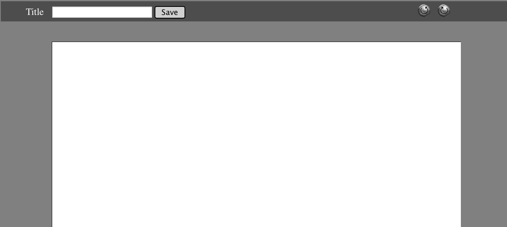

| |
- Solo Project -HTML/CSS/JS
- Tried to emulate the original website without using any tools such as bootstrap or sass. Pure HTML, CSS, and javascript using a text editor.
- Check out the original site at propertybase.com
|
| |
- Solo Project - OOJS
- "Frogger" type game where user helps Ralph cross the forest without getting hit by Felix
- Makes use of JqueryUI widgets
|
| |
- First Place Hackathon - JS & Ruby
- Simulation of humans running away from zombies during the apocolypse, eventually every human turns into a zombie
- Makes use of Ajax calls to update positions from Ruby backend logic
|
|  |
- Solo Project -Rails/MongoDB/Redis
- Simple word processor built on the Rails Framework utilizing both MongoDb and Redis.
- Uses Redis for fast chaching and uses MongoDb for persistence.
- This image links to my Github account for this project.
|
| |
- Group Project - Ruby and JS(Rails App)
- Diabetic enters glucose levels; at weeks end the app generates a PDF of the data and sends to doctor
- Turned Rails app into a single page app that relies on Ajax calls to load partials of each view
- Makes use of HighCharts JS library for data visual representation
|